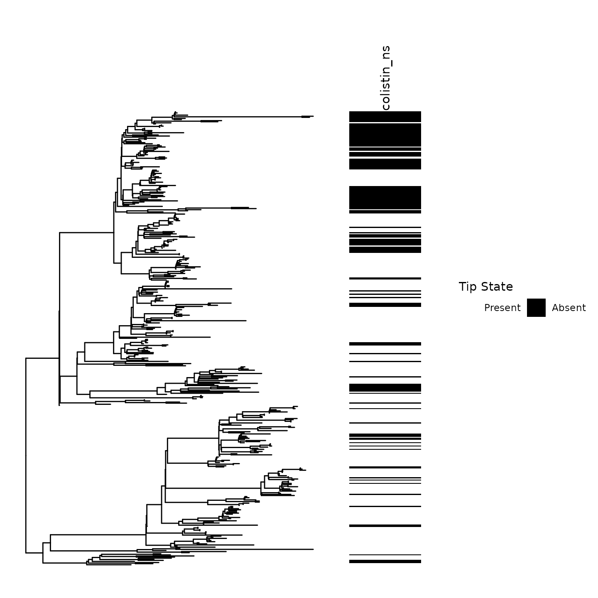
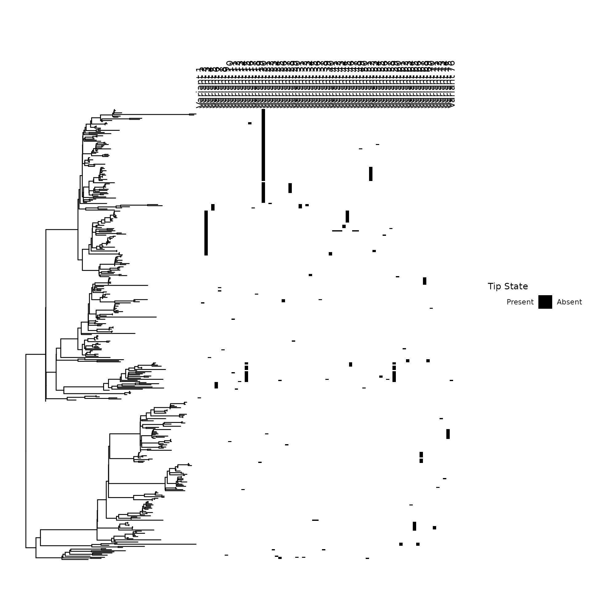

Phenotype and genotype association testing using ancestral state reconstruction
Source:vignettes/ancestral_state_reconstruction_phenotype_genotype_investigations.Rmd
ancestral_state_reconstruction_phenotype_genotype_investigations.RmdIntroduction
This tool’s main workhorse is the asr(), which leverages corHMM’s ancestral state reconstruction algorithm to characterize genome-influenced features’ gain, loss, and continuation across a phylogenetic tree.
After performing joint or ancestral state reconstruction, the resultant state predictions of ancestral nodes are parsed to generate a parent-child dataframe. By traversing the phylogenetic tree from the tips to the root, the episodes of trait gain, loss, and continuation are added to the phylogenetic tree’s edge matrix.
This information can be leveraged to infer whether a genotype is associated with a phenotype. We wrote two functions to assess this: 1. synchronous_transitions(): Detection of synchronous genotype-phenotype transitions 2. downstream_transitions(): Detection of downstream genotype gain/loss events on phenotypic stretches
Environment
library(phyloAMR)
library(dplyr)
#>
#> Attaching package: 'dplyr'
#> The following objects are masked from 'package:stats':
#>
#> filter, lag
#> The following objects are masked from 'package:base':
#>
#> intersect, setdiff, setequal, union
library(stringr)
library(ggplot2)
library(ape)
#>
#> Attaching package: 'ape'
#> The following object is masked from 'package:dplyr':
#>
#> where
library(ggtree)
#> ggtree v3.16.0 Learn more at https://yulab-smu.top/contribution-tree-data/
#>
#> Please cite:
#>
#> Guangchuang Yu, David Smith, Huachen Zhu, Yi Guan, Tommy Tsan-Yuk Lam.
#> ggtree: an R package for visualization and annotation of phylogenetic
#> trees with their covariates and other associated data. Methods in
#> Ecology and Evolution. 2017, 8(1):28-36. doi:10.1111/2041-210X.12628
#>
#> Attaching package: 'ggtree'
#> The following object is masked from 'package:ape':
#>
#> rotateLoad example data
This tutorial will focus on the emergence and spread of colistin non-susceptibility in a collection of 413 carbapenem-resistant Klebsiella pneumoniae specimens collected across 12 California long-term acute care hospitals.
We focus on the evolution and spread of non-susceptibility to colistin, a last-resort antibiotic used to treat Gram-negative bacteria.
Dataframe
- tip_name_variable: variable with tip names
- Patient_ID: Identifiers for patients in this study
- clades: what clade of epidemic lineage sequence type 258 the isolate belongs to
- colistin_ns: colistin non-susceptibility. 1 = non-susceptible. 0 = susceptible
df <- phyloAMR::df
paste0("Total of 413 isolates")
#> [1] "Total of 413 isolates"
paste0("Number of patients: ",length(unique(df$Patient_ID)))
#> [1] "Number of patients: 338"
dim(df)
#> [1] 413 4
paste0("View of dataframe for first 5 isolates")
#> [1] "View of dataframe for first 5 isolates"
head(df,n = 5)
#> tip_name_var Patient_ID clades colistin_ns
#> PCMP_H1 PCMP_H1 1 clade IIA 0
#> PCMP_H2 PCMP_H2 2 clade IIA 0
#> PCMP_H3 PCMP_H3 3 clade IIB 1
#> PCMP_H4 PCMP_H4 4 clade IIB 0
#> PCMP_H5 PCMP_H5 5 clade I 0
paste0("Frequency of non-susceptibility to colistin: ")
#> [1] "Frequency of non-susceptibility to colistin: "
table(df$colistin_ns)
#>
#> 0 1
#> 277 136Step 0.1: Visualization of the trait across the phylogenetic tree
Before performing ancestral state reconstruction, it is critical to visualize the tip states of the trait on the phylogeny.
Our ancestral state reconstruction and clustering algorithm is most powerful in settings where frequent emergence and spread of a trait occurs.
Notice the clustering of Colistin non-susceptibility across the phylogeny.
Numerous emergence events at ancestral nodes and tips can be visually inferred in this phylogeny
Ancestral emergence events had noticeable variations in size. For instance, consider the large cluster of non-susceptibility in the above clade
feature_colors <- c(`1` = "black",`0`="white")
feature_scale <- scale_fill_manual(values=feature_colors,labels=c("Present","Absent"),name="Tip State", guide = guide_legend(nrow=1, title.position = "top", label.position = "right"))
p0 <- gheatmap(ggtree(tr),df %>% select(colistin_ns) %>% mutate_all(as.factor),colnames_position = 'top',width = .25,low = 'white',high='black',colnames_angle = 90,legend_title = 'Colistin non-susceptibility',hjust = 0,color = NULL) + ylim(NA,485) + feature_scale
#> Scale for y is already present.
#> Adding another scale for y, which will replace the existing scale.
#> Scale for fill is already present.
#> Adding another scale for fill, which will replace the existing scale.
p0
Step 0.2: Visualization of the genotypes across the phylogenetic tree
We provide genotypes associated with colistin non-susceptibility. These can be leveraged to demonstrate genotype-phenotype algorithms developed in this package.
genotype_mat <- phyloAMR::genotype_mat
paste0("Total of ",ncol(genotype_mat)," genotypes")
#> [1] "Total of 76 genotypes"
paste0("Genotypes present in this matrix: ")
#> [1] "Genotypes present in this matrix: "
colnames(genotype_mat)
#> [1] "Coding SNP at 3359989 > T functional=NULL_NULL_NULL locus_tag=KPNIH1_RS30220 Strand Information: KPNIH1_RS30220=-;T|stop_gained|HIGH|KPNIH1_RS30220|c.141G>A|p.Trp47*|141/144|47/47|mgrB|PhoP/PhoQ regulator MgrB;_68746"
#> [2] "Coding SNP at 3360003 > A functional=NULL_NULL_NULL locus_tag=KPNIH1_RS30220 Strand Information: KPNIH1_RS30220=-;A|stop_gained|HIGH|KPNIH1_RS30220|c.127A>T|p.Lys43*|127/144|43/47|mgrB|PhoP/PhoQ regulator MgrB;_68748"
#> [3] "Coding SNP at 3360042 > A functional=NULL_NULL_NULL locus_tag=KPNIH1_RS30220 Strand Information: KPNIH1_RS30220=-;A|stop_gained|HIGH|KPNIH1_RS30220|c.88C>T|p.Gln30*|88/144|30/47|mgrB|PhoP/PhoQ regulator MgrB;_68751"
#> [4] "Coding SNP at 3360066 > A functional=NULL_NULL_NULL locus_tag=KPNIH1_RS30220 Strand Information: KPNIH1_RS30220=-;A|stop_gained|HIGH|KPNIH1_RS30220|c.64C>T|p.Gln22*|64/144|22/47|mgrB|PhoP/PhoQ regulator MgrB;_68754"
#> [5] "Coding SNP at 3360123 > A functional=NULL_NULL_NULL locus_tag=KPNIH1_RS30220 Strand Information: KPNIH1_RS30220=-;A|stop_gained|HIGH|KPNIH1_RS30220|c.7A>T|p.Lys3*|7/144|3/47|mgrB|PhoP/PhoQ regulator MgrB;_68758"
#> [6] "Coding Indel at 3360097 > GA functional=NULL_NULL_NULL locus_tag=KPNIH1_RS30220 Strand Information: KPNIH1_RS30220=-;GA|frameshift_variant|HIGH|KPNIH1_RS30220|c.32dupT|p.Ile12fs|32/144|11/47|mgrB|PhoP/PhoQ regulator MgrB;_1973"
#> [7] "Coding Indel at 3360098 > A functional=NULL_NULL_NULL locus_tag=KPNIH1_RS30220 Strand Information: KPNIH1_RS30220=-;A|frameshift_variant|HIGH|KPNIH1_RS30220|c.24_31delACTGATAG|p.Leu8fs|31/144|8/47|mgrB|PhoP/PhoQ regulator MgrB;_1974"
#> [8] "3360144_3360148|KPNIH1_RS30220-KPNIH1_RS17035|-.+"
#> [9] "3360057_3360060|KPNIH1_RS30220|-"
#> [10] "3359997_3360004|KPNIH1_RS30220|-"
#> [11] "3360056_3360060|KPNIH1_RS30220|-"
#> [12] "3360032_3360036|KPNIH1_RS30220|-"
#> [13] "Coding SNP at 1693296 > C functional=NULL_NULL_NULL locus_tag=KPNIH1_RS08505 Strand Information: KPNIH1_RS08505=-;C|missense_variant|MODERATE|KPNIH1_RS08505|c.245T>G|p.Leu82Arg|245/1098|82/365|pmrB|two-component system sensor histidine kinase PmrB;_32525"
#> [14] "Coding SNP at 3058674 > T functional=NULL_NULL_NULL locus_tag=KPNIH1_RS15525 Strand Information: KPNIH1_RS15525=+;T|missense_variant|MODERATE|KPNIH1_RS15525|c.29A>T|p.Gln10Leu|29/1062|10/353|ccrB|HAMP domain-containing histidine kinase CrrB;_62072"
#> [15] "Coding SNP at 3058925 > A functional=NULL_NULL_NULL locus_tag=KPNIH1_RS15525 Strand Information: KPNIH1_RS15525=+;A|missense_variant|MODERATE|KPNIH1_RS15525|c.280C>A|p.Leu94Met|280/1062|94/353|ccrB|HAMP domain-containing histidine kinase CrrB;_62078"
#> [16] "Coding SNP at 3059096 > A,T functional=NULL_NULL_NULL locus_tag=KPNIH1_RS15525 Strand Information: KPNIH1_RS15525=+;T|missense_variant|MODERATE|KPNIH1_RS15525|c.451C>T|p.Pro151Ser|451/1062|151/353|ccrB|ccrB;A|missense_variant|MODERATE|KPNIH1_RS15525|c.451C>A|p.Pro151Thr|451/1062|151/353|ccrB|ccrB;_62079"
#> [17] "Coding SNP at 3059096 > A,T functional=NULL_NULL_NULL locus_tag=KPNIH1_RS15525 Strand Information: KPNIH1_RS15525=+;T|missense_variant|MODERATE|KPNIH1_RS15525|c.451C>T|p.Pro151Ser|451/1062|151/353|ccrB|ccrB;A|missense_variant|MODERATE|KPNIH1_RS15525|c.451C>A|p.Pro151Thr|451/1062|151/353|ccrB|ccrB;_62080"
#> [18] "Coding SNP at 3059193 > T functional=NULL_NULL_NULL locus_tag=KPNIH1_RS15525 Strand Information: KPNIH1_RS15525=+;T|missense_variant|MODERATE|KPNIH1_RS15525|c.548G>T|p.Gly183Val|548/1062|183/353|ccrB|HAMP domain-containing histidine kinase CrrB;_62085"
#> [19] "Coding SNP at 3360039 > T functional=NULL_NULL_NULL locus_tag=KPNIH1_RS30220 Strand Information: KPNIH1_RS30220=-;T|missense_variant|MODERATE|KPNIH1_RS30220|c.91G>A|p.Asp31Asn|91/144|31/47|mgrB|PhoP/PhoQ regulator MgrB;_68750"
#> [20] "Coding SNP at 2080519 > T functional=NULL_NULL_NULL locus_tag=KPNIH1_RS10370 Strand Information: KPNIH1_RS10370=-;T|missense_variant|MODERATE|KPNIH1_RS10370|c.731C>A|p.Thr244Asn|731/1467|244/488|phoQ|two-component system sensor histidine kinase PhoQ;_38555"
#> [21] "Coding SNP at 1693068 > T functional=NULL_NULL_NULL locus_tag=KPNIH1_RS08505 Strand Information: KPNIH1_RS08505=-;T|missense_variant|MODERATE|KPNIH1_RS08505|c.473C>A|p.Pro158Gln|473/1098|158/365|pmrB|two-component system sensor histidine kinase PmrB;_32517"
#> [22] "Coding SNP at 1694059 > T functional=NULL_NULL_NULL locus_tag=KPNIH1_RS08510 Strand Information: KPNIH1_RS08510=-;T|missense_variant|MODERATE|KPNIH1_RS08510|c.157G>A|p.Gly53Ser|157/672|53/223|pmrA|two-component system response regulator PmrA;_32532"
#> [23] "Coding SNP at 3360008 > T functional=NULL_NULL_NULL locus_tag=KPNIH1_RS30220 Strand Information: KPNIH1_RS30220=-;T|missense_variant|MODERATE|KPNIH1_RS30220|c.122T>A|p.Ile41Asn|122/144|41/47|mgrB|PhoP/PhoQ regulator MgrB;_68749"
#> [24] "Coding SNP at 3360056 > G functional=NULL_NULL_NULL locus_tag=KPNIH1_RS30220 Strand Information: KPNIH1_RS30220=-;G|missense_variant|MODERATE|KPNIH1_RS30220|c.74A>C|p.Asn25Thr|74/144|25/47|mgrB|PhoP/PhoQ regulator MgrB;_68752"
#> [25] "Non-Coding SNP at 3360138 > A functional=NULL_NULL_NULL locus_tag=KPNIH1_RS30220-KPNIH1_RS17035 Strand Information: KPNIH1_RS30220=-/KPNIH1_RS17035=+/;A|intergenic_region|MODIFIER|KPNIH1_RS30220-KPNIH1_RS17035|n.3360138C>A||||mgrB,null or hypothetical protein|PhoP/PhoQ regulator MgrB,hypothetical protein,;_68759"
#> [26] "Non-Coding SNP at 3360139 > A functional=NULL_NULL_NULL locus_tag=KPNIH1_RS30220-KPNIH1_RS17035 Strand Information: KPNIH1_RS30220=-/KPNIH1_RS17035=+/;A|intergenic_region|MODIFIER|KPNIH1_RS30220-KPNIH1_RS17035|n.3360139C>A||||mgrB,null or hypothetical protein|PhoP/PhoQ regulator MgrB,hypothetical protein,;_68760"
#> [27] "Non-Coding SNP at 3360169 > T functional=NULL_NULL_NULL locus_tag=KPNIH1_RS30220-KPNIH1_RS17035 Strand Information: KPNIH1_RS30220=-/KPNIH1_RS17035=+/;T|intergenic_region|MODIFIER|KPNIH1_RS30220-KPNIH1_RS17035|n.3360169A>T||||mgrB,null or hypothetical protein|PhoP/PhoQ regulator MgrB,hypothetical protein,;_68761"
#> [28] "Non-Coding SNP at 3360177 > T functional=NULL_NULL_NULL locus_tag=KPNIH1_RS30220-KPNIH1_RS17035 Strand Information: KPNIH1_RS30220=-/KPNIH1_RS17035=+/;T|intergenic_region|MODIFIER|KPNIH1_RS30220-KPNIH1_RS17035|n.3360177C>T||||mgrB,null or hypothetical protein|PhoP/PhoQ regulator MgrB,hypothetical protein,;_68762"
#> [29] "Coding SNP at 2081763 > A functional=NULL_NULL_NULL locus_tag=KPNIH1_RS10375 Strand Information: KPNIH1_RS10375=-;A|missense_variant|MODERATE|KPNIH1_RS10375|c.158G>T|p.Gly53Val|158/672|53/223|phoP|two-component system response regulator PhoP;_38580"
#> [30] "Coding SNP at 2080327 > T functional=NULL_NULL_NULL locus_tag=KPNIH1_RS10370 Strand Information: KPNIH1_RS10370=-;T|missense_variant|MODERATE|KPNIH1_RS10370|c.923T>A|p.Leu308Gln|923/1467|308/488|phoQ|two-component system sensor histidine kinase PhoQ;_38551"
#> [31] "Coding SNP at 2080480 > T functional=NULL_NULL_NULL locus_tag=KPNIH1_RS10370 Strand Information: KPNIH1_RS10370=-;T|missense_variant|MODERATE|KPNIH1_RS10370|c.770T>A|p.Leu257Gln|770/1467|257/488|phoQ|two-component system sensor histidine kinase PhoQ;_38553"
#> [32] "Coding SNP at 2080508 > G functional=NULL_NULL_NULL locus_tag=KPNIH1_RS10370 Strand Information: KPNIH1_RS10370=-;G|missense_variant|MODERATE|KPNIH1_RS10370|c.742A>C|p.Thr248Pro|742/1467|248/488|phoQ|two-component system sensor histidine kinase PhoQ;_38554"
#> [33] "Coding SNP at 2080936 > T functional=NULL_NULL_NULL locus_tag=KPNIH1_RS10370 Strand Information: KPNIH1_RS10370=-;T|missense_variant|MODERATE|KPNIH1_RS10370|c.314T>A|p.Leu105Gln|314/1467|105/488|phoQ|two-component system sensor histidine kinase PhoQ;_38561"
#> [34] "Coding SNP at 2081065 > G functional=NULL_NULL_NULL locus_tag=KPNIH1_RS10370 Strand Information: KPNIH1_RS10370=-;G|missense_variant|MODERATE|KPNIH1_RS10370|c.185T>C|p.Leu62Pro|185/1467|62/488|phoQ|two-component system sensor histidine kinase PhoQ;_38564"
#> [35] "Coding SNP at 1692756 > G functional=NULL_NULL_NULL locus_tag=KPNIH1_RS08505 Strand Information: KPNIH1_RS08505=-;G|missense_variant|MODERATE|KPNIH1_RS08505|c.785T>C|p.Leu262Pro|785/1098|262/365|pmrB|two-component system sensor histidine kinase PmrB;_32509"
#> [36] "Coding SNP at 1692934 > G functional=NULL_NULL_NULL locus_tag=KPNIH1_RS08505 Strand Information: KPNIH1_RS08505=-;G|missense_variant|MODERATE|KPNIH1_RS08505|c.607T>C|p.Ser203Pro|607/1098|203/365|pmrB|two-component system sensor histidine kinase PmrB;_32516"
#> [37] "Coding SNP at 3059243 > C functional=NULL_NULL_NULL locus_tag=KPNIH1_RS15525 Strand Information: KPNIH1_RS15525=+;C|missense_variant|MODERATE|KPNIH1_RS15525|c.598G>C|p.Ala200Pro|598/1062|200/353|ccrB|HAMP domain-containing histidine kinase CrrB;_62089"
#> [38] "3059600_3059605|KPNIH1_RS15525|+"
#> [39] "Coding SNP at 3360069 > G functional=NULL_NULL_NULL locus_tag=KPNIH1_RS30220 Strand Information: KPNIH1_RS30220=-;G|missense_variant|MODERATE|KPNIH1_RS30220|c.61A>C|p.Thr21Pro|61/144|21/47|mgrB|PhoP/PhoQ regulator MgrB;_68756"
#> [40] "Coding SNP at 2081316 > G functional=NULL_NULL_NULL locus_tag=KPNIH1_RS10375 Strand Information: KPNIH1_RS10375=-;G|missense_variant|MODERATE|KPNIH1_RS10375|c.605A>C|p.Gln202Pro|605/672|202/223|phoP|two-component system response regulator PhoP;_38572"
#> [41] "Coding SNP at 2081356 > G functional=NULL_NULL_NULL locus_tag=KPNIH1_RS10375 Strand Information: KPNIH1_RS10375=-;G|missense_variant|MODERATE|KPNIH1_RS10375|c.565A>C|p.Thr189Pro|565/672|189/223|phoP|two-component system response regulator PhoP;_38573"
#> [42] "Coding SNP at 2081357 > T functional=NULL_NULL_NULL locus_tag=KPNIH1_RS10375 Strand Information: KPNIH1_RS10375=-;T|missense_variant|MODERATE|KPNIH1_RS10375|c.564C>A|p.His188Gln|564/672|188/223|phoP|two-component system response regulator PhoP;_38574"
#> [43] "Coding SNP at 2081358 > C functional=NULL_NULL_NULL locus_tag=KPNIH1_RS10375 Strand Information: KPNIH1_RS10375=-;C|missense_variant|MODERATE|KPNIH1_RS10375|c.563A>G|p.His188Arg|563/672|188/223|phoP|two-component system response regulator PhoP;_38575"
#> [44] "Coding SNP at 2081367 > A functional=NULL_NULL_NULL locus_tag=KPNIH1_RS10375 Strand Information: KPNIH1_RS10375=-;A|missense_variant|MODERATE|KPNIH1_RS10375|c.554G>T|p.Arg185Leu|554/672|185/223|phoP|two-component system response regulator PhoP;_38576"
#> [45] "Coding SNP at 2081589 > T functional=NULL_NULL_NULL locus_tag=KPNIH1_RS10375 Strand Information: KPNIH1_RS10375=-;T|missense_variant|MODERATE|KPNIH1_RS10375|c.332G>A|p.Arg111His|332/672|111/223|phoP|two-component system response regulator PhoP;_38578"
#> [46] "Coding SNP at 2081868 > G functional=NULL_NULL_NULL locus_tag=KPNIH1_RS10375 Strand Information: KPNIH1_RS10375=-;G|missense_variant|MODERATE|KPNIH1_RS10375|c.53T>C|p.Val18Ala|53/672|18/223|phoP|two-component system response regulator PhoP;_38581"
#> [47] "Coding Indel at 2081355 > G functional=NULL_NULL_NULL locus_tag=KPNIH1_RS10375 Strand Information: KPNIH1_RS10375=-;G|frameshift_variant|HIGH|KPNIH1_RS10375|c.565delA|p.Thr189fs|565/672|189/223|phoP|two-component system response regulator PhoP;_1050"
#> [48] "Coding Indel at 2081358 > TC functional=NULL_NULL_NULL locus_tag=KPNIH1_RS10375 Strand Information: KPNIH1_RS10375=-;TC|frameshift_variant|HIGH|KPNIH1_RS10375|c.562_563insG|p.His188fs|562/672|188/223|phoP|two-component system response regulator PhoP;_1051"
#> [49] "Coding SNP at 2079808 > A functional=NULL_NULL_NULL locus_tag=KPNIH1_RS10370 Strand Information: KPNIH1_RS10370=-;A|missense_variant|MODERATE|KPNIH1_RS10370|c.1442A>T|p.Gln481Leu|1442/1467|481/488|phoQ|two-component system sensor histidine kinase PhoQ;_38535"
#> [50] "Coding SNP at 2079899 > T functional=NULL_NULL_NULL locus_tag=KPNIH1_RS10370 Strand Information: KPNIH1_RS10370=-;T|missense_variant|MODERATE|KPNIH1_RS10370|c.1351G>A|p.Ala451Thr|1351/1467|451/488|phoQ|two-component system sensor histidine kinase PhoQ;_38537"
#> [51] "Coding SNP at 2079923 > T functional=NULL_NULL_NULL locus_tag=KPNIH1_RS10370 Strand Information: KPNIH1_RS10370=-;T|missense_variant|MODERATE|KPNIH1_RS10370|c.1327G>A|p.Gly443Ser|1327/1467|443/488|phoQ|two-component system sensor histidine kinase PhoQ;_38539"
#> [52] "Coding SNP at 2079952 > A functional=NULL_NULL_NULL locus_tag=KPNIH1_RS10370 Strand Information: KPNIH1_RS10370=-;A|missense_variant|MODERATE|KPNIH1_RS10370|c.1298G>T|p.Arg433Leu|1298/1467|433/488|phoQ|two-component system sensor histidine kinase PhoQ;_38540"
#> [53] "Coding SNP at 2080000 > A functional=NULL_NULL_NULL locus_tag=KPNIH1_RS10370 Strand Information: KPNIH1_RS10370=-;A|missense_variant|MODERATE|KPNIH1_RS10370|c.1250A>T|p.Asp417Val|1250/1467|417/488|phoQ|two-component system sensor histidine kinase PhoQ;_38541"
#> [54] "Coding SNP at 2080286 > T functional=NULL_NULL_NULL locus_tag=KPNIH1_RS10370 Strand Information: KPNIH1_RS10370=-;T|missense_variant|MODERATE|KPNIH1_RS10370|c.964C>A|p.Leu322Met|964/1467|322/488|phoQ|two-component system sensor histidine kinase PhoQ;_38550"
#> [55] "Coding SNP at 2080883 > T functional=NULL_NULL_NULL locus_tag=KPNIH1_RS10370 Strand Information: KPNIH1_RS10370=-;T|missense_variant|MODERATE|KPNIH1_RS10370|c.367G>A|p.Glu123Lys|367/1467|123/488|phoQ|two-component system sensor histidine kinase PhoQ;_38558"
#> [56] "Coding SNP at 2081144 > T functional=NULL_NULL_NULL locus_tag=KPNIH1_RS10370 Strand Information: KPNIH1_RS10370=-;T|missense_variant|MODERATE|KPNIH1_RS10370|c.106G>A|p.Ala36Thr|106/1467|36/488|phoQ|two-component system sensor histidine kinase PhoQ;_38567"
#> [57] "Coding Indel at 2080219 > AG functional=NULL_NULL_NULL locus_tag=KPNIH1_RS10370 Strand Information: KPNIH1_RS10370=-;AG|frameshift_variant|HIGH|KPNIH1_RS10370|c.1030dupC|p.Leu344fs|1030/1467|344/488|phoQ|two-component system sensor histidine kinase PhoQ;_1048"
#> [58] "Coding Indel at 2080486 > T functional=NULL_NULL_NULL locus_tag=KPNIH1_RS10370 Strand Information: KPNIH1_RS10370=-;T|disruptive_inframe_deletion|MODERATE|KPNIH1_RS10370|c.743_763delCCCGGCTGGTCAGCAACCTCA|p.Thr248_Leu254del|763/1467|248/488|phoQ|two-component system sensor histidine kinase PhoQ;_1049"
#> [59] "Coding Indel at 3059657 > A functional=NULL_NULL_NULL locus_tag=KPNIH1_RS15525 Strand Information: KPNIH1_RS15525=+;A|frameshift_variant|HIGH|KPNIH1_RS15525|c.1013_1016delGTTT|p.Ser338fs|1013/1062|338/353|ccrB|HAMP domain-containing histidine kinase CrrB;_1761"
#> [60] "Coding SNP at 3359999 > C functional=NULL_NULL_NULL locus_tag=KPNIH1_RS30220 Strand Information: KPNIH1_RS30220=-;C|missense_variant|MODERATE|KPNIH1_RS30220|c.131T>G|p.Phe44Cys|131/144|44/47|mgrB|PhoP/PhoQ regulator MgrB;_68747"
#> [61] "Coding SNP at 3360059 > G functional=NULL_NULL_NULL locus_tag=KPNIH1_RS30220 Strand Information: KPNIH1_RS30220=-;G|missense_variant|MODERATE|KPNIH1_RS30220|c.71T>C|p.Leu24Pro|71/144|24/47|mgrB|PhoP/PhoQ regulator MgrB;_68753"
#> [62] "Coding SNP at 3360074 > T functional=NULL_NULL_NULL locus_tag=KPNIH1_RS30220 Strand Information: KPNIH1_RS30220=-;T|missense_variant|MODERATE|KPNIH1_RS30220|c.56T>A|p.Leu19Gln|56/144|19/47|mgrB|PhoP/PhoQ regulator MgrB;_68757"
#> [63] "Coding SNP at 2081682 > C functional=NULL_NULL_NULL locus_tag=KPNIH1_RS10375 Strand Information: KPNIH1_RS10375=-;C|missense_variant|MODERATE|KPNIH1_RS10375|c.239C>G|p.Ala80Gly|239/672|80/223|phoP|two-component system response regulator PhoP;_38579"
#> [64] "Coding SNP at 2079865 > C functional=NULL_NULL_NULL locus_tag=KPNIH1_RS10370 Strand Information: KPNIH1_RS10370=-;C|missense_variant|MODERATE|KPNIH1_RS10370|c.1385T>G|p.Ile462Ser|1385/1467|462/488|phoQ|two-component system sensor histidine kinase PhoQ;_38536"
#> [65] "Coding SNP at 2080156 > T functional=NULL_NULL_NULL locus_tag=KPNIH1_RS10370 Strand Information: KPNIH1_RS10370=-;T|missense_variant|MODERATE|KPNIH1_RS10370|c.1094T>A|p.Leu365His|1094/1467|365/488|phoQ|two-component system sensor histidine kinase PhoQ;_38543"
#> [66] "Coding SNP at 2080222 > A functional=NULL_NULL_NULL locus_tag=KPNIH1_RS10370 Strand Information: KPNIH1_RS10370=-;A|missense_variant|MODERATE|KPNIH1_RS10370|c.1028C>T|p.Pro343Leu|1028/1467|343/488|phoQ|two-component system sensor histidine kinase PhoQ;_38545"
#> [67] "Coding SNP at 2080256 > G functional=NULL_NULL_NULL locus_tag=KPNIH1_RS10370 Strand Information: KPNIH1_RS10370=-;G|missense_variant|MODERATE|KPNIH1_RS10370|c.994A>C|p.Thr332Pro|994/1467|332/488|phoQ|two-component system sensor histidine kinase PhoQ;_38549"
#> [68] "Coding SNP at 2081101 > A functional=NULL_NULL_NULL locus_tag=KPNIH1_RS10370 Strand Information: KPNIH1_RS10370=-;A|missense_variant|MODERATE|KPNIH1_RS10370|c.149G>T|p.Arg50Leu|149/1467|50/488|phoQ|two-component system sensor histidine kinase PhoQ;_38565"
#> [69] "Coding SNP at 2081153 > T functional=NULL_NULL_NULL locus_tag=KPNIH1_RS10370 Strand Information: KPNIH1_RS10370=-;T|missense_variant|MODERATE|KPNIH1_RS10370|c.97G>A|p.Gly33Ser|97/1467|33/488|phoQ|two-component system sensor histidine kinase PhoQ;_38568"
#> [70] "2080368_2080380|KPNIH1_RS10370|-"
#> [71] "Coding SNP at 1693257 > T functional=NULL_NULL_NULL locus_tag=KPNIH1_RS08505 Strand Information: KPNIH1_RS08505=-;T|missense_variant|MODERATE|KPNIH1_RS08505|c.284C>A|p.Pro95Gln|284/1098|95/365|pmrB|two-component system sensor histidine kinase PmrB;_32522"
#> [72] "1692837_1692844|KPNIH1_RS08505|-"
#> [73] "Coding SNP at 1152157 > A functional=NULL_NULL_NULL locus_tag=KPNIH1_RS05725 Strand Information: KPNIH1_RS05725=-;A|missense_variant|MODERATE|KPNIH1_RS05725|c.215G>T|p.Ser72Ile|215/288|72/95|null or hypothetical protein|PTS sugar transporter subunit IIB;_22458"
#> [74] "1152365_1152368|KPNIH1_RS05725|-"
#> [75] "Coding SNP at 4653807 > C functional=NULL_NULL_NULL locus_tag=KPNIH1_RS23500 Strand Information: KPNIH1_RS23500=+;C|missense_variant|MODERATE|KPNIH1_RS23500|c.539T>C|p.Val180Ala|539/1350|180/449|qseC|two-component system sensor histidine kinase QseC;_92679"
#> [76] "Coding Indel at 4653290 > A functional=NULL_NULL_NULL locus_tag=KPNIH1_RS23500 Strand Information: KPNIH1_RS23500=+;A|conservative_inframe_deletion|MODERATE|KPNIH1_RS23500|c.34_39delCGCCTG|p.Arg12_Leu13del|34/1350|12/449|qseC|two-component system sensor histidine kinase QseC;_2579"
paste0("Visualization of the genotypes")
#> [1] "Visualization of the genotypes"
gheatmap(ggtree(tr),genotype_mat %>% mutate_all(as.factor),width = 0.8,colnames = F) + feature_scale
#> Scale for y is already present.
#> Adding another scale for y, which will replace the existing scale.
#> Scale for fill is already present.
#> Adding another scale for fill, which will replace the existing scale.
Step 1: Run ancestral state reconstruction
The workhorse function, asr(), is used to perform ancestral state reconstruction. This wrapper function implements ancestral state reconstruction with a single rate category using the corHMM R package: https://github.com/thej022214/corHMM
Using inferred ancestral states and tip-based data, edges on the phylogenetic tree were evaluated to determine episodes where the trait continued (i.e., susceptible -> susceptible or non-susceptible -> non-susceptible), was gained (i.e., susceptible -> non-susceptible), or was lost (i.e., non-susceptible -> susceptible). This edge matrix can be leveraged for numerous applications, including characterizing the frequency of trait transitions across a phylogeny and investigating phenotype-genotype associations.
-
The following parameters exist for this function
df: Dataframe with tip name variable (e.g., tip_name_variable) and trait variable (e.g., colistin_ns)
tr: Phylogenetic tree object of class phylo
-
model: This approach permits the use of either the equal rates (ER) or the all rates differ (ARD) transition matrices.
Equal rates: Assumes equal transition rates for trait gain (e.g., trait absence -> presence) or loss (e.g., trait gain -> absence)
All rates differ: Assumes different transition rates for trait gain and loss
-
node_states: Whether to perform ‘joint’ or ‘marginal’ ancestral state reconstruction
- From our experience, we recommend using joint ancestral state reconstruction.
asr_obj <- phyloAMR::asr(df = df,tr = tr,tip_name_variable = "tip_name_var",trait = "colistin_ns",model = "ER",node_states = "joint")
#> You specified 'fixed.nodes=FALSE' but included a phy object with node labels. These node labels have been removed.
#> State distribution in data:
#> States: 0 1
#> Counts: 277 136
#> Beginning thorough optimization search -- performing 0 random restarts
#> Finished. Inferring ancestral states using joint reconstruction.
paste0("Output names: ")
#> [1] "Output names: "
names(asr_obj)
#> [1] "corHMM_output" "corHMM_model_statistics"
#> [3] "parent_child_df" "node_states"
paste0("corHMM_out: output from ancestral state reconstruction algorithm hosted in the R package corHMM")
#> [1] "corHMM_out: output from ancestral state reconstruction algorithm hosted in the R package corHMM"
asr_obj$corHMM_out
#>
#> Fit
#> lnL AIC AICc Rate.cat ntax
#> -177.9706 357.9413 357.951 1 413
#>
#> Legend
#> [1] "colistin_ns"
#> [1] "0" "1"
#>
#> Rates
#> 0 1
#> 0 NA 89515.8
#> 1 89515.8 NA
#>
#> Arrived at a reliable solution
paste0("corHMM_model_summary: A summary of the corHMM model, including the number of parameters, model, number of rate categories, inferred transition rates, log likelihood, AIC, and AICc")
#> [1] "corHMM_model_summary: A summary of the corHMM model, including the number of parameters, model, number of rate categories, inferred transition rates, log likelihood, AIC, and AICc"
paste0("Rate 1 = transitions from level 1 (i.e., susceptible) to level 2 (i.e., non-susceptible)")
#> [1] "Rate 1 = transitions from level 1 (i.e., susceptible) to level 2 (i.e., non-susceptible)"
paste0("Rate 2 = transitions from level 2 (i.e., non-susceptible) to level 1 (i.e., susceptible)")
#> [1] "Rate 2 = transitions from level 2 (i.e., non-susceptible) to level 1 (i.e., susceptible)"
asr_obj$corHMM_model_summary
#> NULL
paste0("node_states: Chosen node state that was modeled.")
#> [1] "node_states: Chosen node state that was modeled."
asr_obj$node_states
#> [1] "joint"
paste0("parent_child_df: Parent child dataframe, which contains the edge dataset, parent and child values, the child name (for tips), and transition data (i.e., gain, loss, and continuation of the trait on tree or continuation of trait absence on tree)")
#> [1] "parent_child_df: Parent child dataframe, which contains the edge dataset, parent and child values, the child name (for tips), and transition data (i.e., gain, loss, and continuation of the trait on tree or continuation of trait absence on tree)"
head(asr_obj$parent_child_df)
#> parent child parent_value child_value child_name transition gain loss
#> 1 414 415 0 0 <NA> 0 0 0
#> 2 415 416 0 0 <NA> 0 0 0
#> 3 416 417 0 0 <NA> 0 0 0
#> 4 417 418 0 1 <NA> 1 1 0
#> 5 418 419 1 1 <NA> 0 0 0
#> 6 419 420 1 1 <NA> 0 0 0
#> continuation continuation_present continuation_absent
#> 1 1 0 1
#> 2 1 0 1
#> 3 1 0 1
#> 4 0 0 0
#> 5 1 1 0
#> 6 1 1 0Step 2. Synchronous genotype-phenotype analyses
For sake of time, we will only run the analysis on the first two genotypes in this matrix
#> You specified 'fixed.nodes=FALSE' but included a phy object with node labels. These node labels have been removed.
#> State distribution in data:
#> States: 0 1
#> Counts: 412 1
#> Beginning thorough optimization search -- performing 0 random restarts
#> Finished. Inferring ancestral states using joint reconstruction.
#> You specified 'fixed.nodes=FALSE' but included a phy object with node labels. These node labels have been removed.
#> State distribution in data:
#> States: 0 1
#> Counts: 412 1
#> Beginning thorough optimization search -- performing 0 random restarts
#> Finished. Inferring ancestral states using joint reconstruction.
# Synchronous impact
synchronous_df <- lapply(asr_of_genotypes,synchronous_transitions,asr_obj$parent_child_df) %>% do.call(rbind,.) %>% mutate(genotype = variables)
paste0("Synchronous data frame")
#> [1] "Synchronous data frame"
head(synchronous_df)
#> num_trait_gains synchronous_transitions_num synchronous_gains
#> 1 37 0
#> 2 37 0
#> synchronous_gains_num synchronous_gains_prop synchronous_gain_loss
#> 1 0 0
#> 2 0 0
#> synchronous_gain_loss_num synchronous_gain_loss_prop num_trait_losses
#> 1 0 0 11
#> 2 0 0 11
#> synchronous_losses synchronous_losses_num synchronous_losses_prop
#> 1 0 0
#> 2 0 0
#> synchronous_loss_gain synchronous_loss_gain_num synchronous_loss_gain_prop
#> 1 0 0
#> 2 0 0
#> genotype
#> 1 Coding SNP at 3359989 > T functional=NULL_NULL_NULL locus_tag=KPNIH1_RS30220 Strand Information: KPNIH1_RS30220=-;T|stop_gained|HIGH|KPNIH1_RS30220|c.141G>A|p.Trp47*|141/144|47/47|mgrB|PhoP/PhoQ regulator MgrB;_68746
#> 2 Coding SNP at 3360003 > A functional=NULL_NULL_NULL locus_tag=KPNIH1_RS30220 Strand Information: KPNIH1_RS30220=-;A|stop_gained|HIGH|KPNIH1_RS30220|c.127A>T|p.Lys43*|127/144|43/47|mgrB|PhoP/PhoQ regulator MgrB;_68748
paste0("Number of synchronous gain events per genotype")
#> [1] "Number of synchronous gain events per genotype"
table(synchronous_df$synchronous_gains_num)
#>
#> 0
#> 2
paste0("Number of synchronous phenotype gain and genotype loss events per genotype")
#> [1] "Number of synchronous phenotype gain and genotype loss events per genotype"
table(synchronous_df$synchronous_gain_loss_num)
#>
#> 0
#> 2
paste0("Number of synchronous phenotype and genotype loss events per genotype")
#> [1] "Number of synchronous phenotype and genotype loss events per genotype"
table(synchronous_df$synchronous_losses_num)
#>
#> 0
#> 2
paste0("Number of synchronous phenotype los and genotype gain events per genotype")
#> [1] "Number of synchronous phenotype los and genotype gain events per genotype"
table(synchronous_df$synchronous_loss_gain_num)
#>
#> 0
#> 2Step 3: Downstream gain/loss events
downstream_df <- lapply(asr_of_genotypes,downstream_transitions,asr_obj$parent_child_df,tr=tr,node_states='joint') %>% do.call(rbind,.) %>% mutate(genotype = variables)
paste0("Downstream data frame")
#> [1] "Downstream data frame"
head(downstream_df)
#> num_stretches stretches_w_transitions stretches_w_transitions_num
#> 1 7 <NA> 0
#> 2 7 647 1
#> stretches_w_gains stretches_w_gains_num stretches_w_gains_prop
#> 1 <NA> 0 0.00
#> 2 647 1 0.14
#> stretches_w_losses stretches_w_losses_num stretches_w_losses_prop
#> 1 <NA> 0 0
#> 2 <NA> 0 0
#> num_downstream_edges transitions transitions_num transitions_prop gains
#> 1 209 <NA> 0 0.000000000
#> 2 209 228 1 0.004784689 228
#> gains_num gains_prop loss loss_num loss_prop
#> 1 0 0.000000000 0 0
#> 2 1 0.004784689 0 0
#> genotype
#> 1 Coding SNP at 3359989 > T functional=NULL_NULL_NULL locus_tag=KPNIH1_RS30220 Strand Information: KPNIH1_RS30220=-;T|stop_gained|HIGH|KPNIH1_RS30220|c.141G>A|p.Trp47*|141/144|47/47|mgrB|PhoP/PhoQ regulator MgrB;_68746
#> 2 Coding SNP at 3360003 > A functional=NULL_NULL_NULL locus_tag=KPNIH1_RS30220 Strand Information: KPNIH1_RS30220=-;A|stop_gained|HIGH|KPNIH1_RS30220|c.127A>T|p.Lys43*|127/144|43/47|mgrB|PhoP/PhoQ regulator MgrB;_68748
paste0("Number of downstream gain events per genotype")
#> [1] "Number of downstream gain events per genotype"
table(downstream_df$stretches_w_gains_num)
#>
#> 0 1
#> 1 1
paste0("Number of downstream loss events per genotype")
#> [1] "Number of downstream loss events per genotype"
table(downstream_df$stretches_w_losses_num)
#>
#> 0
#> 2
paste0("Number of downstream loss events per genotype")
#> [1] "Number of downstream loss events per genotype"
table(downstream_df$stretches_w_losses_num)
#>
#> 0
#> 2